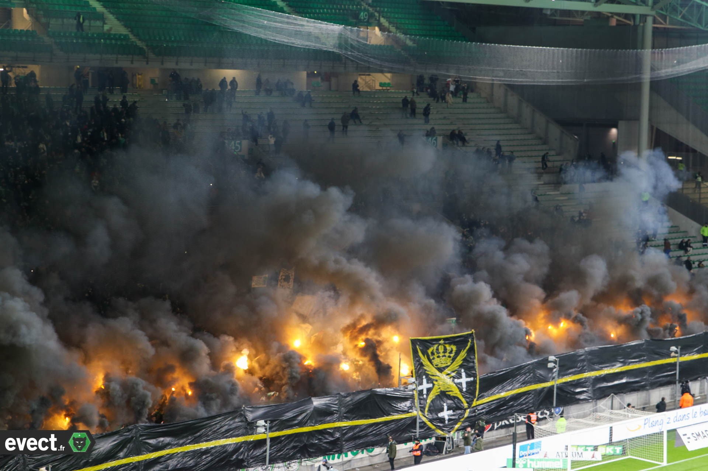

Stade Geoffroy-Guichard
L’histoire du stade
Le stade Geoffroy-Guichard, surnommé "le Chaudron", est un monument du football français. Inauguré en 1931, il a été financé par Pierre Guichard, fils de Geoffroy Guichard,
le fondateur du groupe Casino, pour offrir un espace sportif à la ville de Saint-Étienne et à l’ASSE.
Les débuts modestes
À son ouverture, le stade comptait une simple tribune en bois et une capacité limitée. Au fil des années, il a été agrandi et modernisé pour répondre aux besoins croissants du club et de ses supporters.
Le stade dans ses premières années, symbole d’un projet ambitieux (Source : archives locales).
Les premières évolutions
Dans les années 1950, sous l’impulsion des succès de l’ASSE, le stade connaît ses premières grandes rénovations. Une tribune supplémentaire est ajoutée, et la capacité atteint 20 000 places.
Ces améliorations marquent le début d’une véritable histoire d’amour entre le stade et les supporters.
Extension du stade dans les années 1950 pour accueillir plus de supporters (Source : archives ASSE).
Modernisation et compétitions internationales
Dans les années 1990, en préparation de la Coupe du Monde 1998, le stade subit une transformation majeure. Ses tribunes sont entièrement modernisées,
et sa capacité passe à 35 000 places. L’Euro 2016 marque une autre étape clé avec de nouveaux travaux, portant la capacité à 42 000 places et offrant des infrastructures modernes.
Le stade modernisé pour la Coupe du Monde 1998, prêt pour des événements internationaux (Source : archives UEFA).
Un lieu de passion et d’histoire
Au-delà de ses rénovations, le stade Geoffroy-Guichard reste un lieu emblématique, témoin des moments de gloire de l’ASSE,
des victoires historiques aux grandes soirées européennes. Il est aujourd’hui considéré comme l’un des stades les plus mythiques d’Europe.
Vue actuelle du stade Geoffroy-Guichard, cœur de la passion stéphanoise (Source : archives locales).
Le surnom "Le Chaudron"
Le stade Geoffroy-Guichard est surnommé "Le Chaudron" en raison de l’incroyable ferveur qui s’y dégage lors des matchs. Ce surnom illustre parfaitement l’atmosphère bouillonnante et intimidante qui règne dans ce stade légendaire.
L’origine du surnom
Le surnom "Le Chaudron" apparaît dans les années 1970, lorsque l’ASSE domine le football français et brille sur la scène européenne. Les supporters, véritables acteurs du match, transforment chaque rencontre en un spectacle inoubliable, créant une ambiance digne d’un chaudron en ébullition.
Les supporters des années 1970, à l’origine du surnom "Le Chaudron" (Source : archives locales).
Une ambiance unique en Europe
Connue pour être l’une des plus chaudes d’Europe, l’ambiance du Chaudron repose sur les chants, les tifos spectaculaires, et la proximité des tribunes avec la pelouse. Ce cadre unique rend le stade intimidant pour les adversaires et galvanisant pour les joueurs de l’ASSE.
Une ambiance exceptionnelle dans le Chaudron lors d’un grand match (Source : archives ASSE).
Les grandes soirées du Chaudron
Des soirées mémorables, comme les victoires européennes de 1976 ou les récentes célébrations après la Coupe de la Ligue 2013, ont renforcé l’image du Chaudron comme un lieu magique. Chaque match est l’occasion pour les supporters de montrer leur passion inégalée.
Une soirée européenne inoubliable dans le Chaudron (Source : archives UEFA).
Le Chaudron, une forteresse
Pour les joueurs adverses, jouer au Chaudron est souvent une épreuve difficile. Cette atmosphère intense a permis à l’ASSE de nombreuses fois de renverser des matchs et de créer des exploits mémorables.
Le Chaudron, une forteresse imprenable pour les adversaires (Source : archives nationales).
Les grandes compétitions internationales
Le stade Geoffroy-Guichard a été le théâtre de nombreuses compétitions internationales de premier plan.
Ces événements ont renforcé sa renommée et marqué l’histoire du football mondial.
La Coupe du Monde 1998
En 1998, le stade Geoffroy-Guichard accueille plusieurs matchs de la Coupe du Monde organisée en France. Parmi eux, un huitième de finale spectaculaire entre l’Argentine et l’Angleterre, marqué par l’expulsion de David Beckham. Ces rencontres font découvrir l’ambiance unique du Chaudron au monde entier.
Le stade Geoffroy-Guichard lors de la Coupe du Monde 1998 (Source : archives FIFA).
L’Euro 2016
En 2016, le Chaudron est de nouveau au centre de l’attention lors du Championnat d’Europe. Des équipes comme le Portugal, l’Islande, et l’Angleterre jouent sous l’acclamation d’un public passionné. La modernisation du stade avant le tournoi en fait un cadre idéal pour ces grandes affiches.
Le stade modernisé accueille l’Euro 2016 avec ferveur (Source : archives UEFA).
La Coupe du Monde de Rugby 2007
En 2007, le stade Geoffroy-Guichard se transforme pour accueillir des matchs de la Coupe du Monde de Rugby. L’ambiance survoltée des supporters de rugby se mêle à celle des habitués du Chaudron, offrant une expérience unique.
Une ambiance exceptionnelle lors de la Coupe du Monde de Rugby 2007 (Source : archives locales).
Un stade de légende
Grâce à ces compétitions, le stade Geoffroy-Guichard est reconnu comme l’un des stades les plus emblématiques au niveau international. Il incarne une tradition d’excellence sportive et une passion unique qui transcendent les frontières.
Le stade Geoffroy-Guichard, un lieu de légende pour les compétitions internationales (Source : archives locales).
Capacités et architecture
Le stade Geoffroy-Guichard est une référence dans le football français, autant pour sa capacité que pour son architecture unique.
Depuis son inauguration en 1931, il a été agrandi et modernisé pour devenir un stade de classe internationale.
Une capacité qui a évolué
À ses débuts, le stade avait une capacité d’environ 1 800 places avec une seule tribune en bois. Dans les années 1950, il atteint les 20 000 places grâce à la construction de nouvelles tribunes.
Aujourd’hui, le stade peut accueillir jusqu’à 42 000 spectateurs, offrant une expérience immersive à tous les supporters.
Le stade Geoffroy-Guichard, une capacité qui s’adapte aux besoins modernes (Source : archives locales).
Une architecture iconique
Le stade est réputé pour ses tribunes rectangulaires qui forment un carré parfait autour de la pelouse.
Cette configuration unique offre une acoustique exceptionnelle, amplifiant les chants des supporters et créant une atmosphère incomparable.
Les rénovations pour l’Euro 2016 ont modernisé les structures tout en préservant l’âme du "Chaudron".
Les tribunes rectangulaires du stade, un symbole de son identité architecturale (Source : archives ASSE).
Les grandes rénovations
Le stade a connu plusieurs rénovations majeures, notamment en 1998 pour la Coupe du Monde et en 2016 pour l’Euro. Ces travaux ont permis d’ajouter des sièges, de moderniser les accès,
et d’améliorer les infrastructures pour les spectateurs, les joueurs et les médias.
Les rénovations pour l’Euro 2016 ont transformé le stade tout en respectant son histoire (Source : archives UEFA).
Une immersion totale
Grâce à ses caractéristiques architecturales, chaque spectateur est plongé au cœur de l’action. La proximité des tribunes avec la pelouse permet une immersion totale,
transformant chaque match en une expérience unique pour les supporters.
Une immersion totale pour les supporters grâce à l’architecture unique du stade (Source : archives locales).
Symbole de l’identité stéphanoise
Le stade Geoffroy-Guichard, surnommé "le Chaudron", est bien plus qu’un lieu où se déroulent des matchs de football. Il incarne l’histoire, la fierté, et l’identité de la ville de Saint-Étienne et de ses habitants.
Un lien indéfectible avec la ville
Construit en 1931 par Pierre Guichard, le stade reflète l’héritage industriel de Saint-Étienne. Il est un point de ralliement pour les Stéphanois, qui s’y retrouvent pour partager leur passion pour le football et célébrer leur culture commune.
Le stade Geoffroy-Guichard, un emblème au cœur de la ville de Saint-Étienne (Source : archives locales).
Un lieu de mémoire et de passion
Chaque pierre du stade est témoin des exploits de l’ASSE, des victoires glorieuses aux soirées mémorables. Il porte également la mémoire des supporters, qui transmettent de génération en génération leur amour pour les "Verts".

Le stade, lieu de mémoire des exploits et des légendes du club (Source : archives ASSE).
Un impact au-delà du sport
Le stade Geoffroy-Guichard dépasse le cadre du football en accueillant des concerts, des événements culturels, et des compétitions internationales. Ces activités renforcent son rôle en tant que centre névralgique de la vie sociale et culturelle de la région.
Le Chaudron, un espace vivant pour la culture et le sport (Source : archives locales).
Un symbole d’unité
Le Chaudron est un symbole d’unité pour tous les Stéphanois, quel que soit leur âge ou leur origine. Pendant les matchs, il devient le lieu où la communauté se rassemble pour vibrer au rythme des exploits de l’ASSE, dans un esprit de solidarité et de ferveur.
Supporters unis dans le Chaudron, cœur battant de Saint-Étienne (Source : archives nationales).